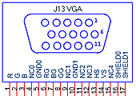

EE 576: Laboratory 0
Introduction to the hardware and software.
Introduction.
In this assignment you will build a circuit which reads some switches and produces a direct digital synthesis (DDS) sine wave.
Procedures:
- You must handle the boards only on on the ESD mat. These boards are expensive and you must be careful of them.
- Make sure the Altera DE2 board is connected to power and to the PC as specified
in the board description. Turn on the power supply with the red switch
on the board. Make sure the toggle switch on the left edge of the board marked (
Run/Prog) is in the Run position and leave it there at all times.
The FPGA will program in the Run position. Putting the switch in the Prog position writes your design to flash memory, which you do not want to do.
- The default top level module for the DE2 defines all of the logical i/o signals from the FPGA. A cleaned up version of the top module
was written by Jordan Crittenden (2008).
- You can define the mapping from logical signal to FPGA pins (pin assignment in QuartusII) for all the pins at once by importing this file using the menu item
Assignments... Import Assignments... and specifying the file name. There is no need to define pins one-by-one. And a note about pin assignments:
Here is the reason why PIN_AE24 will not assign. The physical pin on
the cyclone chip corresponding to PIN_AE24 is a dual-purpose pin. Quartus
must be told to use this as regular i/o (instead of a programming pin)
after programming.
Solution:
In quartus go to--
Assignments >> Device...
Device and Pin Options...
Dual-Purpose Pins (tab)
choose: "Use as regular i/o" for entry: nCEO
Solution was adapted from here:
http://forum.eaw.com.cn/thread/7617/1
Tony Tsang
- Read the Altera tutorial on using Verilog with QuartusII.
- You may want to use the QuartusII SignalTap tool to verify your design. Here are the steps that seem to be necssary to get SignalTap working. For more information, read the Altera tutorial on using SignalTap, an on chip logic analyzer.
- Choose menu
Tools>SignalTap
- In the main SignalTap window, click
Hardware Setup... (in the upper rigtht corner)
and in the dialog box choose the hardware (USB-Blaster)
- Choose menu
Edit>AddNodes...
- Choose the appropriate
Filter to simplify the list of nodes, the press List
- Highlight nodes and move to right-hand list using
> button
- Click
OK to get back to main SignalTap window
- In the main SignalTap window, click the
Clock ... button and choose the clock signal as in AddNodes
- In the node panel of the main window, set up trigger conditions.
- Compile and then load the design onto the FPGA
- In the main SignalTap window, toggle the
Data/Setup button
- Choose menu
Processing >Run Analysis
- The VGA output can operate as a 50 MHz D/A converter if you set the
vga_blanking and vga_sync i/o signals high. You also need to supply a clock to VGA_CLK. Output the sine wave through the VGA red channel. The verilog design for another example contains a DDS unit and a lookup table. The connector pinout is shown with the view of the socket looking at the edge of the board. If you accidentally ground one of the RGB outputs, it will instantly destroy the output driver on the DE2.
A safe approach is to use one of the screws at the corner of the DE2 as ground for the scope.
- You will need to generate a table containing 10-bit approxmations of a sine wave. You can precompute them and build the Verilog table in matlab using the following program, if you need 256 samples/cycle.
%generate a sine table for Verilog ROM
x = 1:256;
% Sin : scale to 10-bits and offset 9-bits
y = fix(512 + 511*sin(2*pi*(x-1)/256));
for i=x
fprintf('\t\t\t8''h%02x: sine = 10''h%03x ;\n', x(i)-1 ,y(i))
end
- When you come to lab, you should have a clean draft of the Verilog code required for the assignment.
Assignment
- You will design the system in Verilog and compile it to the FPGA using QuartusII. Don't use schematic entry or VHDL. Do not build a general purpose CPU for this lab.
- Build a circuit to produce a DDS sine/triangle wave at 50 MHz sample rate then output it through the red channel of the VGA connector.
- If KEY2 is not pressed, the ouput is a sine wave. If it is pressed, the output is a triangle wave.
- You should be able to enter the desired frequency in Hz using SW[17:0] and KEY3. When pressed, KEY3 will multiply the frequency by 256. As an example, setting only SW7 to the up position, and releasing KEY3, should produce 128 Hz. Setting only SW7 to the up position, and pressing KEY3, should produce 128*256=32768 Hz.
- Your implementation should have 256 sine samples/cycle at low frequencies.
- The frequency of the sine wave should be correct to within the accuracy of the scope.
- Plot sine amplitude versus frequency from zero to 1/2 the Nyquist frequency.
- According to the VGA DAC datasheet, The DAC is much faster than 50 MHz (the fastest input clock to the FPGA). Use the Megafunction manager (
Tools...Megafunctions) to build a phase-locked-loop to increase the DDS clock frequency. How fast can you go before the timing constraints of the FPGA are no longer met?
Be prepared to demo your design to your TA in lab and verify that the frequency is correct to the accuracy of the scope. Demo the system using the highest reliable clock frequency.
Your written lab report should include:
- An RTL (register transfer level) block diagran of your design.
- Other design aspects of the assignment.
- Why does the amplitude of the sine wave drop off near the Nyquist frequency?
- What is the maximum PLL-generated clock frequency you can use to run the DDS and DAC?
- A heavily commented listing of your Verilog design.
Copyright Cornell University May 2008